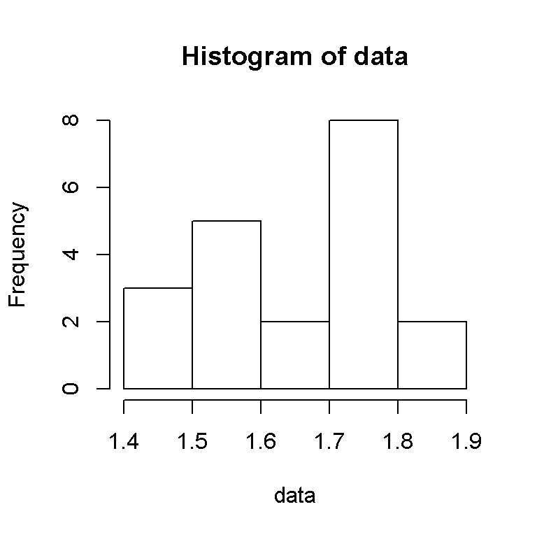

This post will be on basic summary statistics such as mean, median, mode, variance, standard deviation, skewness and kurtosis.
Calculations are done using the statistical programming language R and the code (with references) are found later in this post.
When we are given a random sample of data from a larger population, we want some measures on the random sample we have obtained from a (bigger) population.
To explain the concept of mean, median and mode, I will use an example.
Suppose we want to have an idea of the heights of patients at a clinic. Ideally, we would like to take height measurements of every patient in a clinic that has 197 patients in its database. Due to time and budget constraints, we are able to take the heights of 20 random patients at a clinic.
Suppose these heights of the patients in meters (to 2 decimal places) are:
\[1.50, 1.68, 1.75, 1.80, 1.71, 1.51, 1.68, 1.57, 1.87, 1.75, 1.75, 1.73, 1.56, 1.45, 1.78, 1.80, 1.87, 1.56, 1.47, 1.52\]
When possible, we would like to know what our data looks like when comparing the height values with the frequencies. Here is the histogram of the sample data (from R).
data <- c(1.50, 1.68, 1.75, 1.80, 1.71, 1.51, 1.68, 1.57, 1.87, 1.75, 1.75, 1.73, 1.56, 1.45, 1.78, 1.80, 1.87, 1.56, 1.47, 1.52)
hist(data)
We have 3 height values that are between 1.4 and 1.5 inclusive (in meters), 5 values from 1.5 to 1.6, 2 from 1.6 to 1.7, 8 values from 1.7 to 1.8 and 2 values from 1.8 to 1.9.
The most frequent value from the sample or the mode is 1.75 as it appears the most at a frequency of three.
The median of an ordered sample of values is the middle (or 50th percentile) value. If we have an odd number of values, we take the middle value. In this case where we have an even number of values we take the middle two values and take the average of them. The median of the data set above is 1.695.
The mean or “average” of a random sample is the all the values added together from the sample divided by the number of entries (which is 12).
The mean of the data set to four decimal places is 1.6655.
The more formal way of expressing the sample mean (assuming known values) is by expressing it as \(\bar{x} = \dfrac{1}{n} \sum_{i = 1}^{n} x_{i}\). With the dataset above, we add all the values and divide by \(n = 20\).
If we have unknown values we use a capital \(X\) to convey that it is random. The random sample mean is denoted by \(\bar{X} = \dfrac{1}{n} \sum_{i = 1}^{n} X_{i}\)
Considerations
From a data set, the mean, median and mode together are known as measures of central tendency.
The median is not affected too much from extreme outliers or values (such as 10 meters in the data set above).
Keep in mind that the mean, median and mode values are only for a particular data set at a specific point in time. If one were to gather more measurements of patients heights, then the mean, median and mode values may change based on the new data set.
One may be interested in finding a minimum or maximum value. The range where is it the maximum minus the minimum value can be useful information. The minimum and the maximum of the dataset is 1.45 and 1.87 metres respectively.
Okay we are aware of the some specific values of our data set such as the mean, median, mode, maximum and minimum. What if we want to have an idea about the spread of the values in our sample?
We start with the formulas of variance and standard deviation. The sample variance with unknown or unobserved values is given by:
\[S^{2} = \dfrac{1}{n - 1} \sum_{i = 1}^{n} (X_{i} - \bar{X})^2\]
with the sample standard deviation and unknown values given by \(S = \sqrt{S^2}\).
When given known or observed values, we use lowercase letters as follows:
\[s^{2} = \dfrac{1}{n - 1} \sum_{i = 1}^{n} (x_{i} - \bar{x})^2\]
with the sample standard deviation and known values given by \(s = \sqrt{s^2}\).
The sample variance adds each value in the dataset subtracted by its sample mean squared. The sum of these squared differences is divided by the number of entries minus one. The sample standard deviation is the square root of the sample variance.
With our clinic dataset, our sample variance is 0.018405 and its sample standard deviation is 0.135665.
The concepts of skewness and kurtosis (from my experiences) were not really mentioned in my first undergraduate probability and statistics course. I ended up learning a little about it later in graduate school and from online resources.
Skewness is a measure of asymmetry. The sample skewness (with known values) is given by:
\[\text{Sample skewness} = \dfrac{n \sqrt{n - 1}}{n - 2} \, \dfrac{\sum_{i = 1}^{n} (x_{i} - \bar{x})^3}{s^3} = \dfrac{n \sqrt{n - 1}}{n - 2} \, \dfrac{\sum_{i = 1}^{n} (x_{i} - \bar{x})^3}{(\sum_{i = 1}^{n} (x_{i} - \bar{x})^2)^{3/2}} \]
Zero skewness implies symmetry. This is where the mean, median and mode are all equal. A probability distribution that has symmetry at its mean is the ever famous normal distribution.
A skewness that is non-negative or above zero implies a positive or a right skew. This is when the mode is less than the median which is less than the mean.
\[\displaystyle Mode < Median < Mean\]
A below zero skewness implies a negative or left skew of the frequency distribution. The mean is less than the median which is less than the mode.
\[\displaystyle Mean < Median < Mode\]
As a memory tip, notice how the median is in the middle of each of the inequalities above hence the word median. Due to this, you can just compare only the mean and mode.
From the clinic dataset, the sample skewness is -0.1390198. This is a negative or left skewed sample. This makes sense as we have:
\[\displaystyle (Mean = 1.6655) < (Median = 1.695) < (Mode = 1.75) \]
The visual below summarizes skewness:
Image from: http://www.managedfuturesinvesting.com/managed-futures/news/aisource-news/2015/10/13/what-is-skewness
Kurtosis is a measure of the peakedness of a probability/frequency distribution. It also refers to the shape of a distribution and how “fat” the tails are. A diagram will be given below to help visualize this concept.
The sample kurtosis formula (with known values) is given by:
\[\displaystyle \text{Sample Kurtosis} = \dfrac{n(n + 1)(n - 1)}{(n - 2)(n - 3)} \, \dfrac{\sum_{i = 1}^{n} (x_{i} - \bar{x})^4}{s^4} = \dfrac{n(n + 1)(n - 1)}{(n - 2)(n - 3)} \, \dfrac{\sum_{i = 1}^{n} (x_{i} - \bar{x})^4}{(\sum_{i = 1}^{n} (x_{i} - \bar{x})^2)^{2}}\]
Before we talk about the three types of kurtosis, we also mention excess kurtosis which is:
\[\displaystyle \text{Excess Kurtosis} = \text{Kurtosis} - 3\]
The (famous) Normal Distribution or Gaussian has a Kurtosis of three or an excess kurtosis of zero. We also say that the normal distribution is mesokurtic.
A leptokurtic distribution has a higher peak than a normal distribution. The kurtosis is above three and the excess kurtosis is above 0.
A platykurtic distribution has a shorter peak than a normal distribution. The kurtosis is below three and the excess kurtosis is below 0.
Referring to the clinic dataset above, the sample kurtosis (given by R) is 1.673126. We have the platykurtic distribution case.
The following diagram is a great visual which summarizes the concept of kurtosis. (Source: https://www.quora.com/How-can-I-understand-different-types-of-kurtosis)
The concept of fat tails appeals more to the finance crowd (and not to Sonic the Hedgehog fans) as it relates to financial risk management. There is a lot of conflicting materials online about whether a platykurtic or a leptokurtic distribution has fat tails or not so I will not go in great details about this.
From a graphical point of view, we look at the tails or endpoints where there is more area or probability than a normal distribution. The tails with more probability at the tails are “fat tails”.
From a non-graphical view, we would need to look at the probabilities beyond plus/minus three standard deviations (for example) and compare them to the probabilities of the normal distribution.
Since the dataset is not very big, one could perform the calculations by hand. The problem is is that it takes too long. The use of statistical programming software such as R (It’s free!) helps us compute the values for the sample mean, variance, standard deviation, skewness and kurtosis of the clinic dataset.
Other statistical software includes SAS, SPSS, STATA. You may be able to use Excel and Python for all the calculations.
Lines with a # are comments where steps are explained or where there is a reference.
The code and output below in R
# Sample Summary Statistics
sample <- c(1.50, 1.68, 1.75, 1.80, 1.71, 1.51, 1.68, 1.57, 1.87, 1.75, 1.75, 1.73, 1.56, 1.45, 1.78, 1.80, 1.87, 1.56, 1.47, 1.52)
mean(sample)## [1] 1.6655median(sample)## [1] 1.695# Load moments package for skewness & kurtosis:
# Use install.packages("moments") to install the package.
library(moments)
skewness(sample)## [1] -0.1390198kurtosis(sample)## [1] 1.673126
Formulas for population means, variances, skewness and kurtosis were not provided. I want to focus on the formulas for the samples.
The concepts of estimators, estimates, unbiased estimators, expected values and central moments are not mentioned to avoid confusion.
Some resources use kurtosis and excess kurtosis interchangeably. Be mindful of the value 3.
You may use my code as it is not that hard to use.